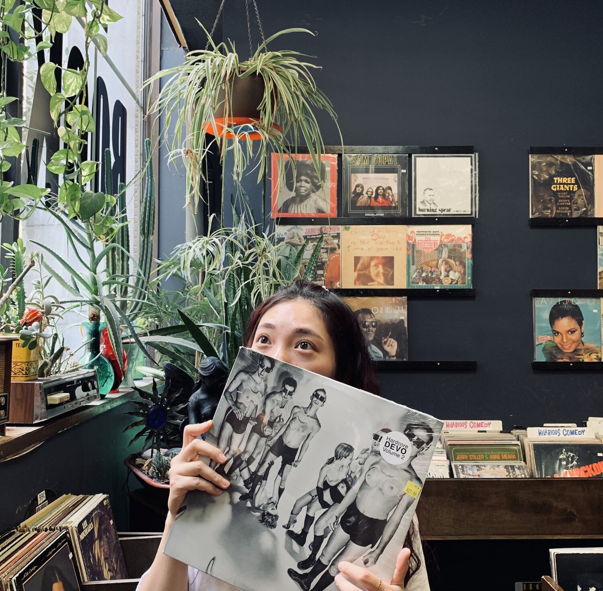

Hello.
I'm Maggie

I am an illustrator and designer from China now living in the United States city of Boston. I love drawing, eating, traveling and watching movie. I am a normal person but also a lucky person. It is wonderful I can study whatever I like and work whenever I want.
I believe everyone is confused at lease once about what their future career would be. I certainly did. Even though I started to draw when I was around five. I gave up drawing only to picked it up again later; I was confused about the major I should choose for my first year of college; I was frustrated shall I keep working on illustration or not. However, I took time and was able to eliminate from my mind pressures from others and then firmly followed my heart to pursue my dream of becoming a wonderful illustrator.
Being an illustrator is a cool thing. It is a profession allowing expression into physical medias not only my ideas but those concepts and ideas of others. Whether drawing them on paper or designing them on the computer, I love to see my illustrations resonated with people. This always makes me feel good. I hope more people will see and love my artworks.
When girls are in their most beautiful age—adolescence, they have various daydreams about anything. However, after they leave school and start to work, more are slowly changed by the adult, work environment and grow up being “mature” and “realistic.” Now adults, having daydreams seem a ridiculous and childish secret. But these silly daydreams are great inspirations stimulating artists to create many incredible works. As time continues to speed ahead, you may sometimes want to slow down to review your childish fantasy daydreams. In this busy and cold world, save a little daydream and become a light to warm yourself.